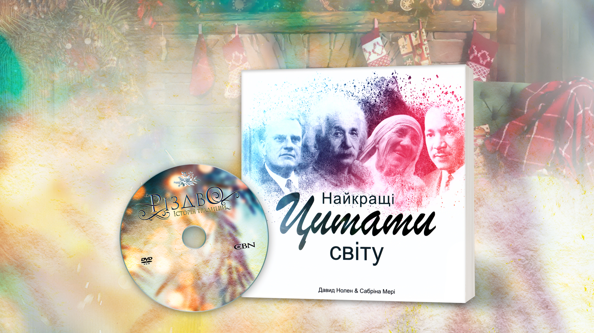

<!DOCTYPE html>
<html lang="en"></html>
<head></head>
<meta charset="UTF-8"/>
<meta name="viewport" content="width=device-width, initial-scale=1.0"/>
<meta http-equiv="X-UA-Compatible" content="ie=edge"/><!--build:css css/main.min.css-->
<!--bower:css-->
<link rel="stylesheet" href="wendor/all4site-fontawesome/dist/css/fontawesome-all.css" />
<link rel="stylesheet" href="wendor/all4site-normalize/normalize.css" />
<link rel="stylesheet" href="wendor/mediaelement/build/mediaelementplayer.css" />
<!--endbower-->
<link rel="stylesheet" href="css/main.min.css"/><!--endbuild-->
<link rel="icon" href="img/favicon.png"/>
<title>Document</title>
<body>
  <section class="videoContainer">
    <div class="video grid">
      <div class="videoPlaer">
        <video controls="controls" width="640" height="400" src="img/Christmas Traditions TRAILER_UA.mp4" poster="img/poater.JPG"></video>
      </div>
    </div>
  </section>
  <section class="top grid">
    <div class="topText">
      <h2>CBN презентує унікальний фільм <em>Різдво: Історія традицій</em></h2>
    </div>
    <div class="topOrder"><a class="btn" href="https://bit.ly/2BbMjqp" data-target="menu" target="_blank">замовити</a></div>
  </section>
  <section class="contentBackground">
    <div class="wrapper">
      <div class="content grid">
        <h1>Наповніть свої серця та домівки <br>особливими моментами радості!</h1>
        <div class="contentImg"></div>
        <div class="contentText">
          <ul>
            <li>Чому Різдво святкують 25-го грудня?</li>
            <li>Як єпископ став Санта-Клаусом?</li>
            <li>Чому ми святкуємо з ялинкою, вінками та панчохами?</li>
            <li>Хто розпочав традицію різдвяних подарунків?</li>
          </ul><br/>
          <p>Компанія CBN підготувала унікальний документальний фільм про Різдво, яким ми хочемо поділитися з вами і водночас допомогти тим, хто цього дуже потребує.</p>
          <p>Зробіть <a href="https://donate.emmanuil.tv/#fast_donation" class="link" target="_blank">пожертву</a> від 300 грн  та отримайте ексклюзивний різдвяний фільм!</p>
          <p>Також ви матимете можливість отримати особливу книгу “Найкращі цитати світу”. Для цього <a href="https://bit.ly/2BbMjqp" class="link" target="_blank">зареєструйтеся.</a></p>
          <p></p>
        </div>
      </div>
      <div class="contentWatch"><a class="btn" href="#!">трейлер</a></div>
    </div>
  </section>
  <section class="orderBackground grid" id="order">
    <div class="order grid">
      <h2>заказать</h2>
      <form class="form grid" action="">
        <input class="btn" type="submit" value="send"/>
      </form>
    </div>
    <div class="footer"><span>© 2018 The Christian Broadcasting Network</span><br/><span>© 2018 Асоціація "Еммануїл"</span></div><!--build:js js/main.min.js-->
<!--bower:js-->
<script src="wendor/jquery/dist/jquery.js"></script>
<script src="wendor/mediaelement/build/mediaelement-and-player.js"></script>
<!--endbower-->
    <script src="js/main.js"></script><!--endbuild-->
  </section>
</body>